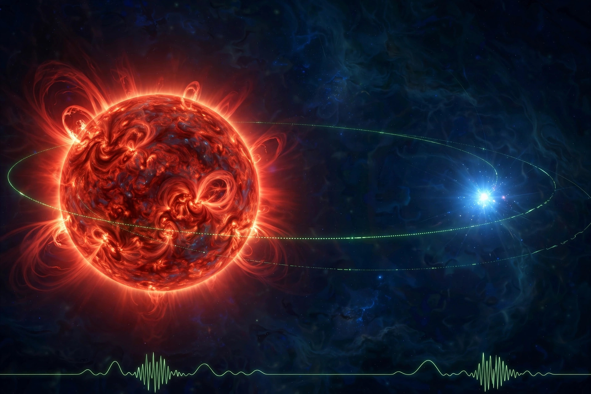

November 14, 2026 · 3 min read
Something Invisible Is Orbiting a Red Giant — and It May Be Too Heavy to Exist

Illustration by The Discovery Wire
Something Invisible Is Orbiting a Red Giant — and It May Be Too Heavy to Exist
Nobody has seen it. That is the point.
A team of astronomers studying data from the LAMOST survey and the APOGEE experiment identified a red giant star with an unseen binary companion — a system called J0008+0128. The companion emits no light of its own that telescopes can pick up. What astronomers can see is what its gravity does to the red giant.
That kind of invisible-companion discovery is routine. What is not routine is the mass.
The gap nobody can explain
Neutron stars — the city-sized, extraordinarily dense remnants of exploded stars — usually weigh about 1.4 times the mass of our Sun, packed into a sphere roughly 20 kilometers across. So far, no confirmed neutron star above about 2.5 solar masses has been found. Black holes, the remnants of even larger stars, typically start at around five solar masses and go up from there.
Between them sits an odd, mostly empty range: the mass gap, roughly 2.5 to 5 solar masses. Astronomers still do not know exactly where neutron stars end and black holes begin, because that boundary depends on how matter behaves under pressures we cannot reproduce on Earth.
A companion that should not fit the models
The team, led by Xinlin Zhao and published in Science Advances (2026), estimates the unseen companion's mass at between 1.8 and 2.8 solar masses, with a best estimate of 2.2 — so its upper range reaches right into the mass gap.
The rest of the system is just as strange:
- The pair completes one orbit in about 3.3 years — a wide separation for a neutron-star binary
- The orbit is surprisingly near-circular despite that wide separation
- There are no signs of mass transfer — the companion appears too far away to be stealing material from the red giant, unlike most other heavy neutron stars in tighter binaries
- The team ran around 300,000 POSYDON simulations of isolated binary evolution — and none reproduced this system's combination of masses and orbital properties
Honest framing: "likely," not "confirmed"
The researchers are careful. The companion is most likely a neutron star — the closest known comparison is Gaia NS1, a neutron-star candidate of about 1.9 Suns in a roughly two-year orbit. But other possibilities remain open: the system could be a triple, with two smaller objects close together; two smaller bodies could have merged earlier; or, at the extreme, the companion could be a very small black hole — none that small has ever been identified.
Whatever it turns out to be, J0008+0128 is exactly the kind of system astronomers need: a real data point in the one mass range where theory runs out. As the authors put it, the wide, low-eccentricity orbit is difficult to explain through standard binary evolution, and points to the need for better models.
We love this kind of result. No hype, no claimed breakthrough — just an invisible thing, weighed by its gravity, sitting where our categories say it should not quite be.
Source: Phys.org, Nov 13, 2026 — Zhao et al., Science Advances (2026), DOI 10.1126/sciadv.aeg3307.
Source: Phys.org — read the original report
← Back to latest stories